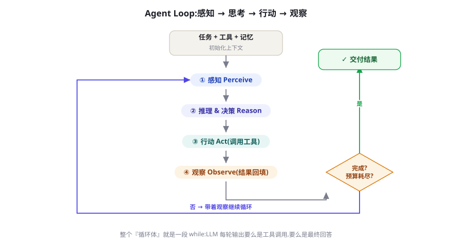
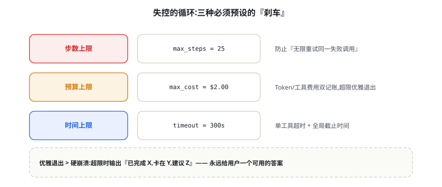
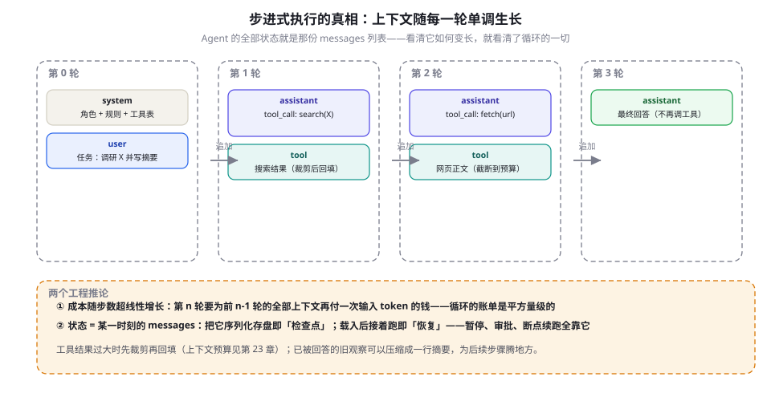

Agent Loop：大模型 Agent 的心脏
第 14 章说清了 Agent 是什么，本章打开它的心脏：一个 while 循环。我们逐行精讲一段 60 行、可直接运行的最小实现，讲透三种终止设计与步数/预算/时间三种刹车，再拆开步进式执行的状态本质——检查点、恢复与人工审批都从这里长出来。所有框架都是这个循环的包装，读懂本章，框架文档从此只是说明书。
循环为什么是心脏
先建立一个惊人的事实对比：你即将看到的这段循环代码不超过 60 行，而 LangGraph、Agents SDK、AutoGen 这些框架动辄数万行。差距不是魔法，是工程完备性——重试、流式、追踪、状态持久化、并行调度——但架构内核完全相同：把用户任务装进上下文，请模型决定下一步；模型说调工具，就执行并把结果塞回上下文；模型说不用了，就把它的回答交给用户。重复，直到完成或资源耗尽。框架做的事情，是把这个循环的状态机化、可视化与生产化，而不是发明新的循环。
为什么循环如此关键？因为第 4 章讲过，LLM 的本质是「给定上下文，预测下一个 token」——它是无状态的、一步的。多步任务需要的三样东西：记住刚才做过什么、看到行动的真实结果、据此修正下一步——全都不在模型里，而在循环里。模型是心脏的瓣膜，循环是心脏的搏动：没有循环，LLM 是一次性问答机（L0）；有了循环，感知-决策-行动才能闭环（L3+），第 14 章的解剖图才活了过来。ReAct（Yao et al., 2022）的贡献正是证明了这个循环不需要外部规划器也能转——把「思考」和「行动」交替写进同一条上下文轨迹，模型自己就能边走边看边修正，完整精读在第 16 章。
这个循环还有值得尊敬的血统。Russell 与 Norvig 给出的「Agent 程序」公式——架构（运行它的机器）+ 程序（agent function 的实现）——在四十年后的 LLM 时代依然是准确的抽象：上下文窗口与工具协议构成了架构，这个 while 循环就是那个程序，连「输入感知序列、输出动作」的接口形状都没变。2023 年的产品史从两个方向验证了它的重要性：AutoGPT 证明了循环能自驱（也暴露了没有刹车与成功标准时的灾难性发散），ReAct 与后续编码 Agent 证明了带护栏的循环可以稳定交付（SWE-agent 的作者团队把设计重心明确放在「给 Agent 的接口」而非「更强的模型」上）。两段历史合起来就是本章的立场：循环本身极简，工程都在循环的内外——外有三刹车与检查点，内有工具设计与上下文预算。

读图时注意两个容易被忽略的箭头。一是「观察」指向「感知」的那条回路——工具结果必须真实回到上下文，这是闭环成立的物理基础，第 3 章第二条判据说的就是它；二是右侧「完成？」的判定不由代码猜，而由模型声明（不再调用工具）或刹车强制（资源耗尽）——这两个终止来源的质量差异，正是 15.3 节的主题。下面把整颗心脏摊开在代码里。
60 行最小实现：逐行精讲
下面这段代码可以原样运行（pip install openai，设置 OPENAI_API_KEY；工具用本地字典模拟检索，替换成真实函数即可变成真 Agent）。它包含完整的工具调用循环、三种刹车、错误回填与优雅退出——先通读，再跟着注解拆：
"""mini_agent.py —— 最小可运行 Agent：工具循环 + 三种刹车 + 优雅退出
依赖：pip install openai；环境变量 OPENAI_API_KEY"""
import json, time
from openai import OpenAI
client = OpenAI()
MODEL = "gpt-4o-mini"
MAX_STEPS, MAX_COST, DEADLINE = 15, 0.50, 300.0 # 三种刹车的出厂设置
START = time.monotonic()
# ---------- 工具层：schema 给模型读，函数给代码跑 ----------
def search_notes(keyword: str) -> str:
"""在知识库中搜索笔记（演示用字典代替真实检索）"""
KB = {"agent": "Agent Loop：LLM 在循环中调用工具、根据观察继续决策…",
"react": "ReAct：把推理与行动交织在同一条轨迹中…"}
return KB.get(keyword, f"知识库中没有「{keyword}」相关的笔记")
TOOLS = [{
"type": "function",
"function": {
"name": "search_notes",
"description": "在知识库中搜索笔记，返回相关段落", # 写给模型的使用说明
"parameters": {"type": "object",
"properties": {"keyword": {"type": "string"}},
"required": ["keyword"]}}}]
EXEC = {"search_notes": search_notes} # 名字 → 真实实现的映射表
PRICE_IN, PRICE_OUT = 0.15 / 1e6, 0.60 / 1e6 # 每 token 单价（示例价）
def run(user_task: str) -> str:
messages = [
{"role": "system", "content": "你是研究助理。先查资料再回答；"
"资料不足就直说，不要编造。"},
{"role": "user", "content": user_task},
]
spent = 0.0
for step in range(1, MAX_STEPS + 1): # 刹车一：步数上限
assert time.monotonic() - START < DEADLINE, "全局超时" # 刹车三
resp = client.chat.completions.create(
model=MODEL, messages=messages, tools=TOOLS)
u = resp.usage # 第 12 章：usage 是记账依据
spent += u.prompt_tokens * PRICE_IN + u.completion_tokens * PRICE_OUT
assert spent < MAX_COST, "任务预算耗尽" # 刹车二：预算上限
msg = resp.choices[0].message
messages.append(msg) # 模型这拍的心跳必须先入册
if not msg.tool_calls: # 不再调用工具 = 模型宣布完成
return msg.content
for call in msg.tool_calls: # 执行本回合的全部工具调用
try:
args = json.loads(call.function.arguments)
result = EXEC[call.function.name](**args)
except Exception as e: # 工具失败也要回填，让模型知情
result = f"ERROR: {type(e).__name__}: {e}"
messages.append({"role": "tool", "tool_call_id": call.id,
"content": str(result)[:4000]}) # 裁剪后再回填
return ("已达步数上限。已确认的信息：见上方工具记录；"
"未完成部分建议：换个更具体的查询再试。") # 优雅退出，而不是抛异常
if __name__ == "__main__":
print(run("用 search_notes 查证后，给我一段关于 Agent Loop 的定义。"))逐段拆解，重点是每个「看起来理所当然」背后的决定。上下文组装（messages 的前两项）：系统提示里写了任务规则与「资料不足就直说」——这句话是给幻觉上的第一道闸（第 9 章）；第 23 章会告诉你这段提示还承担着「成功标准」的职责，写不清标准，模型就不知道何时收工。工具表的双重身份（TOOLS 与 EXEC 并存）：给模型读的 Schema 与给代码跑的函数是两份东西，靠名字对齐——这意味着模型完全可能调用一个「听起来对但不存在」的名字，所以执行端必须像这里一样有容错，而不是默认字典命中。description 的写法遵循第 8 章的原则：它是随接口走的微型提示词。
先入册，再判断（messages.append(msg) 在判断之前）：模型的每一拍输出（哪怕只是工具调用意图）都必须进入上下文，否则下一拍的请求会因为「孤儿工具调用」被 API 拒绝——这是新手最常撞的报错，根因是把对话当成单向流水而非严格的交替序列。错误回填（ERROR: 前缀）：工具抛异常时，把错误原文回填远好于吞掉重试——模型看到「KeyError: date」往往能自己改参数再来一次，这正是「环境闭环」在异常路径上的延续；当然，第 12 章的退避重试应该在工具内部先试过一遍，循环里看到的是「重试后仍失败」的最终错误。结果裁剪（[:4000]）：工具输出直接进上下文，不裁剪的搜索结果会瞬间撑爆窗口——这是循环成本超线性增长（下一节图 15-3）的主要来源，完整的裁剪与压缩策略是第 23 章的上下文预算。
还有一个工程细节值得单独点名：并行工具调用的回填顺序。现代 API 允许模型在一拍里发出多个 tool_calls（用户问「北京和上海今天几度」时很常见），回填时必须保持「每个结果带着自己的 tool_call_id」的对应关系，顺序乱不得——部分供应商会直接拒绝不匹配的请求。执行层面，无依赖的调用可以并行跑（ThreadPoolExecutor 或 asyncio），显著压缩时钟时间；有依赖的（先查再改）必须等结果。并行与重试叠加时还会遇到「部分失败」——三个调用一成一败，是整体重试还是只补败者，补偿策略在第 17 章展开，这里只需记住：回填的对齐正确性优先于执行的性能优化。
循环最隐蔽的成本结构：每一轮都是一次完整的无状态调用。第 n 轮请求会重新发送系统提示、用户任务和前 n-1 轮的全部轨迹——输入 token 随步数线性增长，总成本就是平方量级。这解释了三件事：为什么循环越长越贵（第 78 章的成本数学）、为什么工具结果要裁剪（第 23 章）、为什么供应商的 Prompt Caching 对 Agent 是大杀器——不变的前缀（系统提示 + 早期轨迹）可以被缓存命中，价格降到约一到五折（第 12 章）。
终止设计：三种刹车与优雅退出
循环的第一守则：不会停的循环比不会做的循环更危险——它烧钱、刷爆配额、把上游服务拖死。终止有三种来源，地位完全不同：自然终止（模型不再调用工具）是理想路径，但依赖模型知道「什么叫做完了」；显式终止（要求模型必须调用一个 submit 工具来交卷）把「宣布完成」变成一个动作，比「沉默地不调工具」语义清晰得多，还允许强制附上证据字段（结论、引用、置信度）；强制终止（刹车触发）是最后的保险丝，与模型无关、只与资源有关。
三种刹车全部要在循环开始前设好出厂值，运行中只收紧不放松：

显式终止的工程化写法是给模型注册一个「交卷工具」，Schema 大致如下——它的真正价值不在技术，而在把「完成」从沉默变成可检验的声明：
{
"name": "submit_final_answer",
"description": "任务完成时调用。提交前自检：成功标准全部满足、
每个结论都有工具结果支撑，否则不要提交。",
"parameters": {
"type": "object",
"properties": {
"answer": {"type": "string", "description": "给用户的最终回答"},
"evidence": {"type": "array", "items": {"type": "string"},
"description": "支撑结论的关键工具结果摘要"},
"unfinished": {"type": ["string", "null"],
"description": "未能完成的部分与原因，全完成填 null"}
},
"required": ["answer", "evidence", "unfinished"]
}
}循环里对 submit_final_answer 特殊分支处理：执行它意味着任务结束，unfinished 字段非空时还要在交付物上如实标注——「部分完成」比「假装完成」可信得多。实践证据上，显式提交对「无限修补」与「过早交卷」两种病症都有明显缓解，因为它把成功标准前置到了工具描述里（提示工程的又一次胜利）。
| 刹车 | 拦什么 | 典型量级 | 触发后的正确动作 |
|---|---|---|---|
步数上限 max_steps | 原地打转、无限重试 | 10~25 步量级，按任务定 | 汇总已得信息优雅退出；把轨迹存档供归因 |
预算上限 max_cost | 成本失控、循环烧钱 | 按任务价值定（如 $0.5~$5） | 同上 + 触发告警；连续超预算说明任务或工具有病 |
时间上限 deadline | 下游拖死、用户流失 | 交互 60~300s，批任务放宽 | 退出前必须落检查点（下一节），可恢复续跑 |
| 单工具超时 | 单个工具挂起拖垮全局 | 网络类 10~60s | 超时按工具失败回填（ERROR 前缀），模型可换路 |
刹车触发的输出质量是产品口碑的分水岭。抛异常是给开发者看的，但任务的使用者是人——优雅退出的三段式（已完成 X / 卡在 Y / 建议 Z）把失败也变成可用的交付。演示代码最后那个 return 就是这个用意。另一个常被漏掉的终止分支：finish_reason == "length"——上下文或输出被截断时模型可能「没说完就停」，把它当作特殊状态处理（压缩上下文后继续，或直接判定任务过大），而不是当成正常完成。终止之外，还有一整类「停不下来但也没错」的中间态：任务该暂停等人审批、等外部事件、等次日的数据——这就轮到下一节的状态管理登场。
步进式执行：状态、检查点与恢复
现在给出本章最重要的一个抽象：Agent 的全部状态就是那一刻的 messages 列表——不是某个框架的内部对象，不是数据库里的任务表，就是一个可序列化的 JSON。看清它如何一步步生长，循环的一切工程（持久化、审批、恢复、压缩）都变成显然的：

import json, time, uuid
def checkpoint(messages, meta, path):
"""每个关键节点调用一次：messages + 元信息 = 可恢复的全部状态"""
json.dump({"messages": messages,
"meta": {**meta, "task_id": str(uuid.uuid4()),
"saved_at": time.time()}},
open(path, "w", encoding="utf-8"),
ensure_ascii=False, indent=2)
def resume(path):
"""恢复 = 原样载入，把 messages 塞回循环即可继续跑"""
state = json.load(open(path, encoding="utf-8"))
return state["messages"], state["meta"]这个十几行的小函数解锁的能力清单，比它自己的长度长得多。中断与恢复：时间刹车触发前存盘，次日载入续跑——长时程任务的地基（第 76 章的 Checkpointing 是它的工业版）。人工审批：在「执行工具前」挂起存盘，把待审批动作推给人，批准后恢复执行——第 25 章的人机协同模式全部建立在「状态可停」之上。调试与回放：出问题的任务，载入检查点单步重放，配合第 79 章的 trace 能精确定位到「哪一拍开始歪的」。压缩：恢复时顺手把早期的大段工具结果折叠成摘要，上下文立刻瘦身——第 23 章的上下文折叠就是在检查点边界上做的。
检查点落到哪里也有讲究，按任务时长三档选型。秒到分钟级：内存或进程内字典足够，崩溃重跑比持久化便宜；分钟到小时级：本地文件或对象存储，一行 json.dump 的量级，重点变成「文件写原子性」（先写临时文件再改名，防止写到一半崩溃留下半截状态）；小时到天级：数据库表，messages 一列、meta 一列，加上状态机字段（运行中/挂起等审批/已完成/失败），此时检查点系统事实上就是任务队列的半边身子（第 80 章的队列与并发接手另一半）。另外，恢复时有一处版本敏感：messages 里的 provider 消息格式。跨供应商恢复（OpenAI 格式 ↔ Anthropic 格式）需要一层消息格式转换，工具调用的字段形状两家不同——把「内部标准格式 ↔ 供应商格式」的转换做成单向纯函数，是第 11 章统一抽象层设计的自然延伸。
只有一条红线要划清：工具副作用不享受检查点的时光机。messages 恢复到第 3 轮，但第 3 轮已经发出的邮件、已经扣的款不会跟着回去——所以有副作用的工具必须幂等（请求 ID 去重，第 12 章），或被设计成「先审批、后执行」（第 60 章的权限分级）。状态可以回滚的世界里，只有现实世界的操作需要额外的敬畏。
循环的变体：单环、双环与外环
最小循环是所有变体的原型，工程进化基本沿着三个方向生长。方向一：增强环内每拍的质量——ReAct 在行动前强制先写一段思考，让决策有理可查（第 16 章）；工具调用前后加结构化校验与重试（第 8、17 章）。方向二：拆成双环——Plan-and-Execute 把「规划一次、逐步执行、必要时重规划」分成规划环与执行环，规划器看得全、执行器走得稳（第 18 章）。方向三：加外环——Reflexion 在任务失败后把教训写成语言反馈存进记忆，下一轮任务带着教训重来；自我批评与多评审也是外环的变体（第 22 章）。
| 变体 | 结构 | 解决的问题 | 何时用 | 本书位置 |
|---|---|---|---|---|
| ReAct 循环 | 单环 + 强制思考位 | 决策黑箱、错得没痕迹 | 几乎所有工具循环的默认起点 | 第 16 章 |
| Plan-and-Execute | 双环：规划环 + 执行环 | 长任务走偏、局部最优 | 步骤多且有依赖关系的任务 | 第 18 章 |
| 反思外环 | 任务环 + 失败复盘环 | 同型任务反复失败 | 可多次尝试、失败代价可控 | 第 22 章 |
| 多 Agent 主循环 | 循环内调度多个子 Agent | 上下文过载、职责混杂 | 子任务隔离且可并行验证 | 第 24 章 |
| 搜索式循环 | 循环 + 树分支回溯 | 单路径赌错全盘皆输 | 可验证、允许试错的领域（数学、代码） | 第 93 章 |
变体与器官的关系也值得一句注脚：变体本质上是在给五个器官「加班」。反思外环是让记忆器官参与学习，多 Agent 是把中枢拆成中枢团队，搜索式循环是给决策加回溯——它们的代价都是「上下文与预算的更大消耗」，收益都要靠评测数据说话。所以变体选择的最后仲裁者不是架构审美，而是第 13 章的评测集：先证明单环在哪个指标上过不去，再让变体上场，上场后还要在同一评测集上证明增量真实存在。
选变体的原则与第 14 章的决策树同构：每加一层环，都要指名它解决哪个已观测的病症，并承受对应的复杂度税。反过来的忠告更值钱：你看到的生产事故里，「变体堆太多」与「没有变体」几乎各占一半——先跑通最小循环、用评测证明某个具体短板存在，再引入对应变体，是唯一不还债的路径。第 27 章会在 200 行实现里演示「从最小循环长出记忆与反思」的完整过程，第 16 章则把 ReAct 这个最重要的变体讲透。
messages = [
{"role": "system", "content":
"你是研究助理。每次回复必须先写一行 Thought（当前判断与下一步理由），"
"再决定是否调用工具；资料不足就直说，不要编造。"},
{"role": "user", "content": user_task},
]
# 其余代码不变：Thought 会随 assistant 消息进入上下文，
# 既约束模型「先想后动」，又给 trace 留下可读的决策依据（第 79 章）。拆双环的时机值得用一个例子说透。一个 40 步的长任务跑在单环上，常见轨迹是第 15 步之后逐渐「忘了」最初的成功标准——因为上下文被工具结果淹没，早期约束被稀释；此时把「目标与计划」提成一份独立的计划文档，执行环每 5 步对照一次、偏离即重规划，就是 Plan-and-Execute 的雏形。注意触发条件是可测量的走偏（步数超标、评测通过率下降），而不是「任务长」本身——有的 50 步任务单环跑得很稳，有的 10 步任务就需要双环，判据永远来自监控与评测，这也再次呼应了第 13 章。
常见循环病症与处方
循环病有典型症状，对照诊断比逐行调试快得多。下表是六种最常见的病，附录 B 有更完整的排错手册与真实案例（附录 B），这里给出速查版：
| 病症 | 症状 | 根因 | 处方 |
|---|---|---|---|
| 原地打转 | 同一工具、同一参数反复调用 | 错误被吞、结果不可见，或提示未禁止重复 | 错误原文回填；系统提示加「连续两次相同调用必须换路」 |
| 无限修补 | 反复微调输出永不收工 | 没有可判定的完成标准 | 系统提示写验收清单；用显式 submit 工具强制交卷 |
| 幻觉工具名 | 调用不存在的函数 | 工具表太长、描述含混 | 精简工具集；按任务动态注入工具（第 17 章） |
| 上下文爆炸 | 第 5 轮起延迟与费用陡增 | 工具结果全量回填 | 结果裁剪、旧观察压缩（第 23 章） |
| 过早交卷 | 信息不足就自信作答 | 成功标准缺失、检索过浅 | 提示声明「证据不足必须继续查」；submit 要求附证据 |
| 静默失败 | 刹车触发后无输出或只报错 | 没有设计优雅退出 | 三段式收尾（已完成/卡在/建议）+ 检查点存档 |
防病还有一条系统化路径：把循环自身的健康度变成可测量指标。平均步数、步数分布（P95）、每步工具失败率、预算消耗分布、刹车触发率——这五个数字是 Agent 循环的「生命体征」，接进第 79 章的监控后，病症会在指标上先于用户投诉出现：步数 P95 上翘通常是环境变了（供应商更新、接口改版），失败率集中在某个工具上是工具契约出了问题。更进一步，用第 13 章的思路把「典型任务」做成金丝雀定时跑——循环的回归测试，和提示词的回归测试一样重要。
把这些处方合起来看，会发现它们共享同一个哲学：循环的可靠性不来自模型变聪明，而来自工程把「知情权」做足——错误让它看见、结果让它读全、标准让它知道、资源让它有数。这也回应了第 3 章行为主义学派的判断：闭环质量决定 Agent 质量。到此为止，你已经握住了所有 LLM Agent 共用的心脏——接下来两章把它用透：第 16 章精读 ReAct 范式，看思考与行动如何交织；第 17 章深入工具调用，看心脏的每一次泵血如何设计。
本章小结
- 所有框架的内核是同一个 while 循环：组装上下文 → 模型决策 → 执行工具 → 结果回填，直到完成或资源耗尽；框架的数万行是工程完备性，不是新架构。
- 逐行精讲的关键决定：先入册再判断（避免孤儿工具调用）、错误原文回填（闭环延伸到异常路径）、结果裁剪（上下文预算）、Schema 与实现分离且有容错。
- 终止三来源：自然终止依赖模型知道「做完了」；显式 submit 工具把交卷变成可检验的动作；三种刹车（步数、预算、时间）是资源保险丝——出厂即设，只紧不松。
- 刹车触发必须优雅退出：已完成/卡在/建议三段式；
finish_reason=length是独立的终止分支，不是正常完成。 - Agent 的全部状态是 messages 列表：存盘即检查点、载入即恢复——中断续跑、人工审批、调试回放、上下文压缩全部由此解锁；副作用工具必须幂等。
- 循环成本随步数超线性（平方量级），Prompt Caching 与结果裁剪是主要解药；循环变体（ReAct、双环、外环、多 Agent、搜索式）都应「有病才加」。
自测题
- 为什么
messages.append(msg)必须发生在判断tool_calls之前？跳过它会发生什么？（提示：工具调用与结果必须成对出现；API 校验。） - 工具调用抛异常时，「回填错误原文」比「静默吞掉重试」好在哪？两者如何兼得？（提示：闭环的知情权；工具内部退避重试，循环里回填最终错误。）
- 三种刹车分别拦什么病？给一个「批处理文档抽取」任务设三者的合理量级。（提示：步数/成本/墙钟；批任务可放宽时间、按单条成本设预算。）
- 为什么说「Agent 的全部状态是 messages」？这个抽象解锁了哪四项能力？（提示：可序列化；恢复、审批、回放、压缩。）
- 检查点恢复后，为什么「已发送的邮件」不会跟着回滚？工程上如何处理有副作用的工具？（提示：副作用在现实世界；幂等键、先审批后执行。）
- 「过早交卷」和「无限修补」看似相反，根因却是同一个——是什么？（提示：成功标准是否被显式声明。）
参考文献与延伸阅读
- Yao, S. et al. (2022). ReAct: Synergizing Reasoning and Acting in Language Models. ICLR 2023. arXiv:2210.03629
- Shinn, N. et al. (2023). Reflexion: Language Agents with Verbal Reinforcement Learning. NeurIPS 2023. arXiv:2303.11366
- Yao, S. et al. (2023). Tree of Thoughts: Deliberate Problem Solving with Large Language Models. NeurIPS 2023. arXiv:2305.10601
- Wang, G. et al. (2023). Voyager: An Open-Ended Embodied Agent with Large Language Models. arXiv:2305.16291（技能库式循环生长的代表作）
- Yang, J. et al. (2024). SWE-agent: Agent-Computer Interfaces Enable Automated Software Engineering. NeurIPS 2024. arXiv:2405.15793
- Weng, L. (2023). LLM Powered Autonomous Agents. Lil'Log. lilianweng.github.io（Agent = 规划 + 记忆 + 工具 的经典综述文）
- OpenAI Agents SDK（Handoffs、Guardrails 与 Session 化的循环封装）. github.com/openai/openai-agents-python